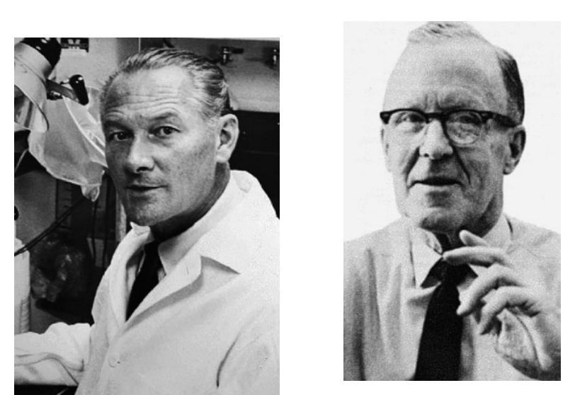
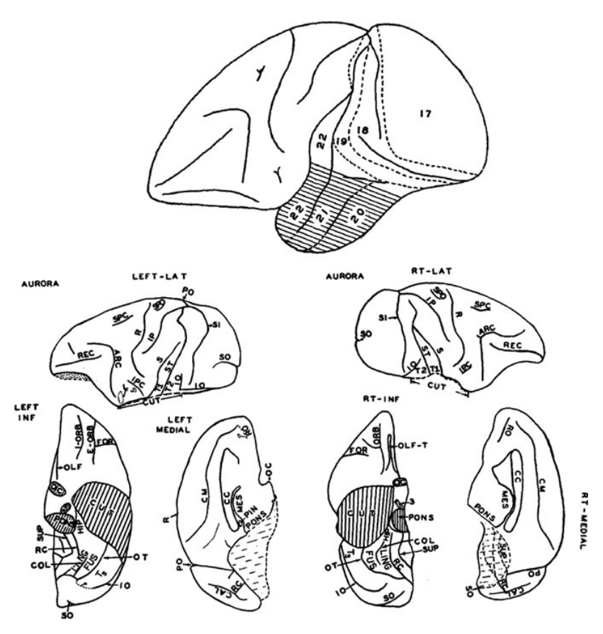
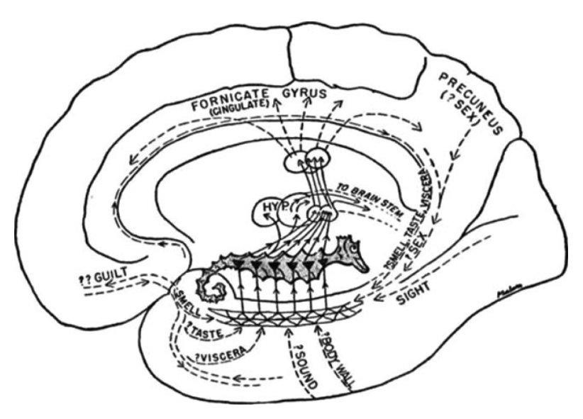

Chương 12 — Học tập và trí nhớ: Donald Hebb, Brenda Milner và H. M.
Chương 12
Học tập và Trí nhớ: Donald Hebb, Brenda Milner và H. M.
Học tập và trí nhớ là nền tảng của mọi loài động vật và là cơ sở cho phần lớn năng lực nhận thức của con người. Giả thuyết hàng đầu về cơ sở thần kinh của học tập và trí nhớ bắt nguồn từ Donald Hebb, được trình bày trong một cuốn sách giáo khoa vào năm 1949; khớp thần kinh Hebb phụ thuộc hoạt động vẫn là tâm điểm của nhiều nghiên cứu hiện nay. Các nghiên cứu vào thập niên 1950 đã mở rộng việc tìm hiểu vỏ não sang thùy viền, ghi nhận những bằng chứng đầu tiên về các cơ chế thần kinh ở hạch hạnh nhân và các cấu trúc dưới vỏ khác liên quan đến hành vi cảm xúc. Một chương mới trong nghiên cứu não bộ đã mở ra với các ca phẫu thuật nhằm giảm nhẹ chứng động kinh, qua đó cho thấy vai trò thiết yếu của hồi hải mã đối với trí nhớ. Việc cắt bỏ hồi hải mã hai bên để điều trị chứng động kinh mạn tính gây suy nhược đã khiến một bệnh nhân, H. M., mất khả năng hình thành ký ức mới. Một loạt nghiên cứu về H. M. bắt đầu từ năm 1957 và kéo dài suốt nửa thế kỷ của Brenda Milner đã phác họa rõ vai trò của hồi hải mã trong việc hình thành trí nhớ và khai sinh ra lĩnh vực khoa học thần kinh nhận thức mới mẻ.
Như chúng ta đã thấy, phần lớn các nghiên cứu về hệ thần kinh được thúc đẩy bởi mối quan tâm đến cơ sở thần kinh của tri giác. Các mối quan tâm lớn khác hướng đến cơ chế thần kinh của cảm xúc, cũng như của học tập và trí nhớ. Giữa thế kỷ XX là thời kỳ của những bước tiến mang tính cách mạng đối với các cơ chế đó, cho thấy những vùng não chi phối các loại hành vi này có mối liên hệ mật thiết với nhau.
Học tập và Định đề của Hebb
Ít có cái tên nào vang vọng rộng khắp trong khoa học thần kinh hiện đại hơn Donald Hebb. Lý thuyết của ông về cơ sở thần kinh của việc học tập bắt nguồn, không có gì ngạc nhiên đối với độc giả của lịch sử này, từ giữa thế kỷ XX. Vì phần lớn khoa học thần kinh cũng như tâm lý học tập trung vào các cơ chế học tập và ít nhà nghiên cứu chịu khó tìm hiểu điều Hebb thực sự muốn nói là gì, chúng tôi sẽ phác thảo chi tiết hơn lịch sử này.
Như đã đề cập ở chương trước, lý thuyết học tập vào đầu thế kỷ trước bị chi phối bởi các nhà hành vi học, những người coi não bộ như một chiếc hộp đen và lập luận rằng việc nghiên cứu não bộ không liên quan gì đến việc nghiên cứu tâm trí. Ngược lại, một số ít nhà lý thuyết học tập đã tiến hành thí nghiệm với động lực tìm hiểu các cơ chế thần kinh nền tảng.
Karl Lashley là một trong những người tiên phong. Lashley làm việc tại Harvard vào thập niên 1920 và 1930, và tại Phòng thí nghiệm Sinh học Linh trưởng Yerkes vào thập niên 1940. Milner nhận xét rằng Lashley ‘‘duy trì một cách tiếp cận hợp lý đối với tâm lý học khi ngành này trải qua một giai đoạn tồi tệ, và đã nêu lên những câu hỏi quan trọng vẫn còn nguyên giá trị’’ (Milner, 1999, điểm 1).
Lashley đã thực hiện một loạt nghiên cứu trên chuột thực hiện các nhiệm vụ học tập thị giác khác nhau và khảo sát tác động của các tổn thương vỏ đại não lên việc học. Một phát hiện then chốt đối với ông là mức độ suy giảm khả năng học tập tỷ lệ thuận với lượng vỏ đại não bị cắt bỏ, không phụ thuộc vào vị trí. Kết quả này được công bố trong một bài báo có tựa đề ‘‘In Search of the Engram’’ (Đi tìm dấu vết ký ức) (Lashley, 1950), nổi tiếng vào thời điểm đó không chỉ vì tựa đề đầy kịch tính mà còn vì phát hiện phủ định (và chẳng bao lâu sau bị bác bỏ) của nó. Để giải thích kết quả của mình, Lashley đưa ra giả thuyết rằng phần lớn chức năng của tân vỏ não được biểu hiện thông qua các cơ chế tích hợp dưới vỏ.
Vấn đề chính mà Lashley vật lộn là sự biểu diễn thần kinh của những gì được học. Tại đây, một hướng tiếp cận khác bước vào cuộc chơi. Một trong những học trò của Ramón y Cajal, Lorente de Nó, đã tiếp tục sử dụng phương pháp nhuộm Golgi trong một loạt nghiên cứu về tân vỏ não. (Trong một nghiên cứu, ông đã xác định các cụm tế bào ở vùng cảm giác thân thể phụ trách khuôn mặt của chuột, gọi chúng là các cầu vỏ não [cortical glomeruli]. Những cấu trúc này sau đó được Tom Woolsey và Henrik van der Loos [1970] tại Đại học Johns Hopkins tái phát hiện và đặt tên lại là các thùng vỏ não [cortical barrels], vốn đã trở thành một trong những mô hình chính cho tổ chức vỏ não và học tập.)
Lashley bị ấn tượng bởi một sơ đồ tổ chức vỏ não dựa trên các tế bào nhuộm Golgi trong một bài báo của Lorente de Nó (1934). Sơ đồ này mô tả các tế bào tạo thành những mạch dội lại (reverberatory circuits) thông qua các nhánh bên sợi trục của chúng bên trong vỏ não, một lược đồ mà Lorente de Nó lặp lại trong chương kinh điển về vỏ đại não trong cuốn The Physiology of the Nervous System của John Fulton tại Yale năm 1938 (đã bàn ở Chương 10). Lashley nắm bắt khái niệm này và đưa ra định đề rằng ‘‘Từ một tổ chức cấu trúc như vậy, có thể suy ra các đặc tính chức năng với một mức độ tin cậy nhất định’’ (Milner, 1999, điểm 7). Điều này được đưa ra khi chưa hề có bất kỳ ý niệm nào về đặc tính của cả nơ-ron lẫn khớp thần kinh! Quan điểm của Lashley là các nơ-ron hoạt động như những bộ cộng hưởng, được điều chỉnh theo các tần số khác nhau; các xung cảm giác đi vào vỏ não dưới dạng sóng, lan truyền và giao thoa với nhau, tạo ra các mô hình sóng đứng biểu diễn các kích thích. Những mô hình sóng này biểu diễn kích thích; một quá trình học tập tiếp theo sẽ liên kết tri giác được hiện thân trong mô hình sóng đứng với một đáp ứng cảm giác (Milner, 1999, điểm 9).
Donald Hebb (Hình 12.1) là học trò của Lashley. Ông từng học tại McGill, thử làm hiệu trưởng một trường học trong vài năm, và bị cuốn hút trở lại con đường nghiên cứu sau đại học về tâm lý học nhờ đọc sách của William James, James Watson và Sigmund Freud. Ông làm việc dưới sự hướng dẫn của Lashley để lấy bằng tiến sĩ năm 1936 về việc thiếu hụt thị giác sớm ảnh hưởng thế nào đến tri giác thị giác ở chuột. Wilder Penfield sau đó mời ông gia nhập Viện Thần kinh Montreal (xem Chương 10), nơi ông nghiên cứu tác động của tổn thương thùy trán đối với hành vi con người, và kết luận rằng những tác động tối thiểu cho thấy sự tồn tại của các hệ thống thần kinh phân bố rộng rãi. Tiếp theo, khi giảng dạy tại Đại học Queen’s, ông phát triển các bài kiểm tra trí thông minh cho chuột và người. Đến năm 1942, ông tin chắc rằng học tập là một yếu tố quan trọng đối với trí thông minh hơn nhiều so với quan niệm thông thường.
Trong năm đó, Hebb gia nhập nhóm của Lashley tại Yerkes và bắt đầu nghiên cứu hành vi của tinh tinh. Tại đây, ông bắt đầu đúc kết kinh nghiệm của mình thành một cuốn sách, như ông viết trong phần giới thiệu, nhằm phát triển ‘‘một lý thuyết tổng quát về hành vi cố gắng bắc cầu qua khoảng cách giữa sinh lý học thần kinh và tâm lý học.’’ Một bản thảo đã được hoàn thành vào khoảng năm 1945. Bầu không khí trí tuệ tại Yerkes là nguồn kích thích lớn cho việc viết cuốn sách. Đóng góp của Lashley và những người khác vào các ý tưởng trong sách là chủ đề của nhiều cuộc tranh luận sôi nổi (xem Orbach, 1999; Milner, 1999; Haider, 2008). Hebb trở lại McGill, nơi ông được bổ nhiệm làm trưởng khoa tâm lý học năm 1948. Cuốn sách của ông, tựa đề The Organization of Behavior: A Neuropsychological Theory (Tổ chức của Hành vi: Một Lý thuyết Tâm lý học Thần kinh), ra mắt năm 1949.
Chính xác thì cuốn sách này chứa đựng những gì, mà các khái niệm của nó vẫn nằm ở trung tâm của khoa học thần kinh hiện đại hơn nửa thế kỷ sau? Hãy nhớ rằng, vào cuối thập niên 1940 vẫn chưa có thông tin gì về đặc tính của các nơ-ron và khớp thần kinh trung ương, chưa có sinh lý học màng tế bào, chưa có siêu cấu trúc tế bào, chưa có các hệ thống chất dẫn truyền thần kinh, chưa có lấy một bản ghi nào từ tế bào vỏ não, chưa có các chất có hoạt tính sinh học, và chưa có bất kỳ bước tiến nào của thập niên 1950 mà chúng ta đã đề cập trong các chương trước.
Một điểm khởi đầu then chốt cho Hebb là cuốn sách của Hilgard và Marquis (1940), chỉ ra rằng các sơ đồ về mạch vỏ não hồi quy của Lorente de Nó có thể liên quan đến một cơ chế cho việc học tập. Điều này ‘‘rất có thể là khoảnh khắc bừng tỉnh của Hebb’’ (Milner, 1999, điểm 11). Trái ngược với Lashley, Hebb bỏ qua phép loại suy về các mô hình giao thoa và tập trung trực tiếp vào các khớp thần kinh kết nối một quần thể nơ-ron.
Có một số ý tưởng cốt lõi được trình bày trong chương 4 của Hebb (Hình 12.2, Phụ lục 12.1):
1. Khớp thần kinh Hebb (Hebbian synapse). ‘‘Khi một sợi trục của tế bào A ở đủ gần để kích thích tế bào B và lặp đi lặp lại hoặc bền bỉ tham gia vào việc kích hoạt nó, một quá trình tăng trưởng hoặc biến đổi chuyển hóa nào đó sẽ diễn ra ở một hoặc cả hai tế bào sao cho hiệu quả của A, với tư cách là một trong những tế bào kích hoạt B, được tăng lên’’ (62). Nói cách khác, học tập xảy ra khi có sự gia tăng tương quan ở cả hoạt động tiền khớp thần kinh và hậu khớp thần kinh.
(Mặc dù sự tăng cường phụ thuộc hoạt động đã được biết đến ở khớp thần kinh – cơ và sau đó được tìm thấy ở các khớp thần kinh khác, nó quá ngắn ngủi để có thể làm cơ sở cho việc học tập dài hạn. Tuy nhiên, phát hiện sau này về sự tăng cường dài hạn [LTP] của Bliss và Lømo [1973] đã lập tức xác định được một cơ chế khớp thần kinh cho trí nhớ dài hạn và một khớp thần kinh mô hình [kết nối giữa các nhánh bên Schaffer và các tua gai CA1 ở hồi hải mã]. Khớp thần kinh Hebb đã ra đời. Nó cũng cung cấp cơ sở cho việc học tập của các mạng nơ-ron nhân tạo kết nối luận.)
2. Tập hợp tế bào (cell assembly). Các tế bào cùng hoạt động với nhau tạo thành cái gọi là một ‘‘tập hợp tế bào.’’ Điều này cũng được phản ánh trong câu châm ngôn phổ biến rằng ‘‘các tế bào cùng phát xung thì kết nối với nhau’’ (cells that fire together wire together). Theo Milner (1999), tập hợp tế bào có thể là đóng góp khái niệm quan trọng nhất của Hebb:
3. Hoạt động dội lại (reverberatory activity). Trong lược đồ của Hebb, hoạt động dội lại hàm ẩn trong các sơ đồ của Lorente de Nó vẫn tiếp diễn sau tín hiệu đầu vào ban đầu, nhờ đó cho phép tập hợp tế bào tiếp tục biểu diễn sự kiện kích hoạt.
(Có thể lưu ý rằng, về mặt khái niệm, hoạt động dội lại trong các mạch vỏ não giả thuyết của Lorente de Nó được xây dựng trực tiếp dựa trên các mô tả về mạch vòng làm nền tảng cho các chuyển động vòng tròn của cơ tim, vốn được cho là nguyên nhân gây ra rung nhĩ và rung thất ở tim. Những lược đồ này đã được công nhận từ đầu thế kỷ. Hiện nay, hoạt động dội lại kéo dài trong các mạch nơ-ron vỏ não vẫn chưa được chứng minh. Những thay đổi dài hạn trong mô thức phát xung của tế bào, phản ánh các biến đổi khớp thần kinh Hebb dài hạn, đã trở thành mô hình chính cho cơ chất thần kinh nền tảng của học tập và trí nhớ.)
4. Hoạt động tâm trí. Các tập hợp tế bào khác nhau được kích hoạt theo những trình tự khác nhau tạo nên cơ chất thần kinh của tư duy.
Cuốn The Organization of Behavior xuất hiện vào một thời điểm thuận lợi. Các tư tưởng của Skinner đang chiếm ưu thế, thuyết phục các nhà tâm lý học rằng các dữ kiện sinh lý không liên quan gì đến các khái niệm tâm lý học. Một ý niệm, theo định nghĩa của nhà tâm lý học, là một khái niệm tâm lý tách rời khỏi cơ chất thần kinh.
‘‘Cho đến thời điểm đó, các ý niệm được hầu hết các nhà tâm lý học coi là thuần túy tinh thần (ngay cả bởi các nhà hành vi học, đó là lý do họ từ chối bàn về chúng). Hebb đã mang lại cho các ý niệm một cơ sở thần kinh và mở ra cánh cửa cho khoa học thần kinh nhận thức’’ (Milner, 1997, điểm 10).
Do đó, các ý tưởng của Hebb trước tiên tạo ra tác động trong tâm lý học, giúp cân bằng lại chủ nghĩa hành vi thuần túy và thúc đẩy sự trỗi dậy của tâm lý học sinh lý và tâm sinh học vào thập niên 1960 và 1970.
(Với tư cách là một nhà khoa học thần kinh thực nghiệm và tính toán, bản thân tôi ít chú ý đến các ý tưởng của Hebb vì các khớp thần kinh có biến đổi dài hạn, các tập hợp tế bào được định nghĩa mơ hồ, và các mạch dội lại mang tính suy đoán có rất ít bằng chứng thực nghiệm hỗ trợ. Sự tăng cường dài hạn đã thay đổi tất cả điều đó vào thập niên 1970, và đến thập niên 1980 các mạng kết nối luận mang đặc tính Hebb đã bước vào lĩnh vực khoa học thần kinh. Tất cả những bước phát triển này đã dẫn đến sự ra đời của khoa học thần kinh nhận thức, tiêu biểu là Hội thảo Mùa hè đầu tiên về Khoa học Thần kinh Nhận thức năm 1985, do Stephen Kosslyn, Michael Posner và tôi tổ chức.)
Tóm tắt. Donald Hebb đã mang lại một cuộc cách mạng trong khoa học thần kinh nhận thức. Di sản từ lý thuyết học tập của ông, được hình thành ngay từ buổi bình minh của khoa học thần kinh hiện đại, vẫn đang tiếp tục được mở ra (xem Brown và Milner, 2003). Một nhận định mạnh mẽ về tầm quan trọng của cuộc cách mạng này đã được Raymond Klein đưa ra:
Khi triết học và sinh lý học hội tụ vào thế kỷ XIX, Tâm lý học xuất hiện với lời hứa về một khoa học của đời sống tinh thần (Boring, 1950). Bằng cách cung cấp một sự hiện thực hóa về mặt thần kinh cho ‘‘hóa học tinh thần’’ của các nhà liên tưởng luận, Hebb đã thực hiện lời hứa này và đặt nền móng cho chủ nghĩa tân kết nối luận, vốn tìm cách giải thích các quá trình nhận thức theo các kết nối giữa những tập hợp nơ-ron thật hoặc nhân tạo. Xin cho phép tôi mạo hiểm chịu tiếng ‘‘sùng bái anh hùng’’ khi dự đoán rằng khi ngành khoa học còn tương đối non trẻ của chúng ta trưởng thành, tầm vóc các ý tưởng của Hebb trong tâm lý học và khoa học thần kinh hành vi sẽ lớn mạnh ngang tầm với các ý tưởng của Darwin trong sinh học.
(Klein, http://www.cpa.ca/cpasite/userfiles/documents/ publications/cjep/special_eng.html)
Đánh giá này cũng được những người khác đồng tình: ‘‘. . . lời tri ân lớn nhất dành cho Hebb có lẽ là của Adams (1998), người đã tuyên bố rằng ‘Hai trong số những cuốn sách có ảnh hưởng nhất trong lịch sử sinh học là Nguồn gốc các loài của Darwin (1859/1964) và Tổ chức của Hành vi của Hebb (1949)’ (Milner, 1999, xem trực tuyến).’’
Hệ Viền (The Limbic System)
Mặc dù phần lớn sự quan tâm tập trung vào vỏ não, các phần khác của hệ thần kinh cũng được phát hiện đóng vai trò thiết yếu trong các chức năng vỏ não bậc cao làm nền tảng cho nhận thức và hành vi. Trong số những bước tiến vĩ đại của thập niên 1950 có việc thừa nhận tầm quan trọng của hệ viền và những bằng chứng đầu tiên về vai trò chức năng của hồi hải mã và hạch hạnh nhân bên trong hệ thống này.
Thùy viền. ‘‘Thùy viền lớn’’ (great limbic lobe) được Paul Broca đề xuất lần đầu tiên tại Pháp vào năm 1878 như một vòng tròn được tạo thành bởi hồi đai, một vòng vỏ đại não, và hồi hải mã bao quanh lõi trung tâm của não trước. Ông đề xuất rằng đường viền này, ‘‘nằm ở cửa vào và cửa ra của bán cầu đại não,’’ giống như ngưỡng cửa; do đó có thuật ngữ ‘‘limbic’’ (viền), từ tiếng Latin có nghĩa là ngưỡng cửa là limen. Ông cho rằng thùy viền này là nơi cư ngụ của các năng lực bậc thấp hơn so với các năng lực bậc cao của phần còn lại của vỏ đại não.
Mạch Papez. Ý tưởng này gần như ngủ yên cho đến khi được thổi luồng sinh khí mới vào năm 1937 bởi James Papez, một nhà thần kinh học ở Chicago. Những cơn bộc phát cảm xúc ở các bệnh nhân bị tổn thương hồi hải mã và hồi đai đã thôi thúc ông đánh giá lại các mối liên hệ giải phẫu của những vùng này trong não. Điều này dẫn ông đến một giả thuyết mới mẻ về mạch thần kinh làm nền tảng cho cảm xúc, được mô tả trong bài báo ‘‘A Proposed Mechanism of Emotion’’ (Một cơ chế đề xuất của cảm xúc) (Papez, 1995) (Phụ lục 12.2).
Trong lược đồ này, biểu hiện cảm xúc bắt nguồn từ vùng dưới đồi, nằm sâu trong lõi não, thông qua các đường chiếu đến thân não vốn kiểm soát đầu ra vận động (cơ và tuyến) của biểu hiện cảm xúc. Nhưng làm thế nào phần còn lại của não biết về đầu ra này? Điều này được truyền từ thể vú của vùng dưới đồi đến đồi thị và tiếp tục đến hồi đai, trung tâm diễn giải chủ quan về trạng thái cảm xúc. Hồi đai lần lượt kết nối với hồi hải mã, nơi kết hợp thông tin này với các đầu vào khác nhau đến từ các vùng não khác và gửi đầu ra cảm xúc này trở lại thể vú. Trong lược đồ này, con đường từ hồi đai đến hồi hải mã rồi đến thể vú cung cấp một phương tiện giúp trải nghiệm cảm xúc chủ quan ở cấp độ vỏ não cao nhất có thể kết hợp với nội dung cảm xúc từ đầu ra vùng dưới đồi để tạo nên biểu hiện cảm xúc.
Trước đây chưa từng có ai hình dung ra cách các cấu trúc não này có thể liên hệ với nhau một cách có ý nghĩa như thế nào, và mạch Papez đã được đón nhận với sự nhiệt tình lớn lao, trở thành động lực mạnh mẽ cho các nghiên cứu tiếp theo. Một điểm hấp dẫn là nó đã mang lại một chức năng thú vị cho hồi hải mã, vốn cho đến lúc đó vẫn bị coi là một phần của não khứu giác (rhinencephalon, ‘‘não mũi’’), liên quan đến khứu giác theo một cách thức chưa rõ ràng.
Hội chứng Klüver-Bucy. Cùng năm Papez công bố mạch của mình, Heinrich Klüver và Paul Bucy tại Chicago đã báo cáo kết quả sơ bộ của các thí nghiệm trong đó họ cắt bỏ thùy thái dương hai bên ở khỉ. Dù chỉ là sơ bộ, báo cáo này được biết đến rộng rãi và trích dẫn trong nhiều năm sau đó. Việc công bố báo cáo đầy đủ bị trì hoãn bởi Thế chiến II và cuối cùng xuất hiện vào năm 1955 (xem Bucy và Klüver, 1955) (Hình 12.3, Phụ lục 9.3). Họ ghi nhận năm tác động chính:
1. Quá chú ý (Overattentiveness): Các con vật bồn chồn; chúng có xu hướng thôi thúc phải hướng về hoặc đáp ứng với mọi kích thích.
2. Tăng đưa vật vào miệng (Hyperorality): Các con vật kiểm tra mọi đồ vật một cách cưỡng bức bằng cách cho chúng vào miệng.
3. Mù tâm thần (Psychic blindness): Các con vật nhìn thấy nhưng không hiểu; chúng tiếp cận và kiểm tra bừa bãi các đồ vật ngay cả khi nguy hiểm (như que diêm đang cháy).
4. Tăng hoạt động tình dục: Các con vật gia tăng hoạt động tình dục một cách bừa bãi, thậm chí hướng tới cả những vật vô tri.
5. Biến đổi cảm xúc: Những con khỉ trước đây hoang dã và hung dữ trở nên thuần lành, điềm tĩnh và có thể dễ dàng tiếp xúc.
Phức hợp các đặc điểm này được gọi là hội chứng Klüver-Bucy. Chứng mù tâm thần sau đó được chứng minh là do mất tân vỏ não thùy thái dương. Tình trạng tăng hoạt động một phần có thể do các nơ-ron ở rìa tổn thương phát xung liên tục. Tình trạng tăng hoạt động tình dục (vốn ban đầu là một trong những khía cạnh gây chấn động nhất của hội chứng) dường như quá vô hướng đến mức chỉ đơn thuần là một phần của tình trạng tăng động chung ở những con vật này. Cuối cùng, những biến đổi cảm xúc trong hội chứng Klüver-Bucy được gắn kết đặc biệt với hạch hạnh nhân.
Hạch hạnh nhân (Amygdala). Phức hợp tế bào này nằm ở vỏ đại não tại đáy não trước ở các loài thú bậc thấp và trên thành trong của đáy thùy thái dương ở các loài thú bậc cao. Mặc dù các ca cắt bỏ kiểu Klüver-Bucy đã mang lại những manh mối đầu tiên về mối liên hệ giữa hạch hạnh nhân và cảm xúc, các biến đổi lại khác nhau tùy thuộc vào loài; chẳng hạn, mèo trở nên hung tợn thay vì hiền lành sau khi phá hủy hạch hạnh nhân. Một số nghiên cứu liên kết tình trạng tăng tính dục với sự gia tăng hung hăng trong các trường hợp này. Tuy nhiên, cắt bỏ là một công cụ quá thô sơ và có quá nhiều điểm không chắc chắn về mức độ tổn thương trong các nghiên cứu khác nhau nên không thể đưa ra kết luận chắc chắn.
Một cách chính xác hơn để nghiên cứu hạch hạnh nhân là sử dụng kích thích điện khu trú. Paul MacLean là một trong những người tiên phong trong các nghiên cứu này. Các nghiên cứu của ông về hạch hạnh nhân và các phần liên quan của mạch Papez đã góp phần dẫn đến khái niệm hiện đại về hệ viền.
Paul MacLean sinh năm 1913; học tại Yale với mối quan tâm đến triết học; và sau đó nhận bằng bác sĩ y khoa (MD) tại đó vào năm 1940. Sau Thế chiến II, ông mở phòng mạch tư về tâm thần học nhưng sớm bị thôi thúc tìm hiểu các cơ chế não bộ làm nền tảng cho bệnh tâm thần và đã nhận học bổng nghiên cứu với Stanley Cobb tại Bệnh viện Đa khoa Massachusetts (MGH) ở Boston (chúng ta sẽ thấy MGH đã đóng vai trò là cái nôi đào tạo các nhà tâm thần học thần kinh như thế nào ở Chương 13). Khi nghiên cứu các bệnh nhân động kinh, ông trở nên quan tâm đến trải nghiệm cảm xúc của họ và mối liên hệ khả dĩ của chúng với thùy thái dương và hồi hải mã. Điều này đưa ông đến với James Papez và ‘‘mạch Papez.’’ Được truyền cảm hứng mạnh mẽ sau chuyến thăm Papez, MacLean đã tập hợp các nghiên cứu của mình trên bệnh nhân trong một bài báo năm 1949 có tựa đề ‘‘Psychosomatic Disease and the Visceral Brain: Recent Developments Bearing on the Papez Theory of Emotion’’ (Bệnh tâm thể và Não nội tạng: Những phát triển gần đây liên quan đến Lý thuyết Cảm xúc của Papez) (Phụ lục 12.4). Theo Kelly Lambert (2003, 344):
MacLean tránh gọi mạch này là não khứu giác vì ông muốn giảm nhẹ chức năng khứu giác và nhấn mạnh chức năng cảm xúc. Sau đó ông quyết định dùng thuật ngữ visceral (nội tạng/thâm tâm) dựa theo định nghĩa gốc ở thế kỷ XVI chỉ những cảm giác mạnh mẽ bên trong. Khía cạnh quan trọng của bài báo này là gợi ý của MacLean rằng não của các loài thú có thể có một đặc điểm chung là một hệ thống khá nguyên thủy chịu trách nhiệm tích hợp thông tin cảm giác, gợi mở một sự phân đôi giữa hành vi trí tuệ và hành vi cảm xúc, phi ngôn từ của chúng ta.
Bài báo này đã thu hút sự chú ý của John Fulton, người có công trình cùng Carlyle Jacobsen tại Yale về thùy trán và mối liên hệ của nó với cảm xúc đã dẫn đến sự phát triển của phẫu thuật tâm thần (xem Chương 14). Tại Yale, MacLean trở nên quan tâm đến Broca và ý tưởng về ‘‘thùy viền’’ của ông. Theo Lambert, 344:
Vì Broca nhấn mạnh vai trò của thùy viền trong khứu giác, một chức năng bị coi là ít quan trọng đối với con người, mạch giải phẫu này đã trở thành đứa con bị hắt hủi trong các sách và bài giảng về giải phẫu não. MacLean viết rằng một tác giả từng truyền đạt rằng vùng não này có lẽ đóng góp rất ít cho sự tiến hóa của não người và do đó không nên được xem xét thêm trong sách. Sau khi xem xét lại cách dùng thuật ngữ limbic (viền) của Broca, ông cảm thấy thuật ngữ này phù hợp hơn thuật ngữ visceral và bắt đầu gọi mạch cảm xúc là hệ viền (limbic system) vì thuật ngữ mới này chỉ mang hàm ý mô tả thay vì hàm ý chức năng gắn liền với thuật ngữ visceral.
Những nghiên cứu này và các nghiên cứu tiếp theo trong thập niên 1950 đã đóng vai trò quan trọng trong việc mang lại sự trân trọng rộng rãi hơn đối với hệ viền, cả cho công chúng lẫn cho nghiên cứu và thực hành lâm sàng. Cuối cùng, MacLean đã phát triển các ý tưởng của mình thành khái niệm ‘‘não bộ ba ngôi’’ (triune brain), bao gồm não bò sát, não thú bậc thấp và não người, hợp nhất với nhau nhưng vỏ não người có ngôn từ lại không thể giao tiếp hiệu quả với não bò sát và não thú bậc thấp nguyên thủy phi ngôn từ (xem MacLean, 1990).
Nghiên cứu của MacLean đã mang lại một trọng tâm mới cho các nghiên cứu về cấu trúc và chức năng của từng thành phần riêng lẻ trong hệ viền, đặc biệt là hồi hải mã và hạch hạnh nhân. Chẳng hạn, cùng với José Delgado, MacLean đã thực hiện một nghiên cứu năm 1953 cho thấy kích thích điện khu trú vào vùng các tế bào của phức hợp hạch hạnh nhân đã khơi gợi các kiểu biểu hiện nội tạng và cảm xúc khác nhau (Hình 12.4). Điều này giúp khởi đầu cuộc điều tra về các đặc tính chức năng của vùng não này, nơi hiện đang thu hút sự quan tâm mãnh liệt vì vai trò then chốt của nó trong đời sống cảm xúc của động vật có vú.
Delgado cũng thu hút được nhiều sự chú ý của công chúng hơn khi ông cấy điện cực vào não một con bò tót và đối mặt với nó trong đấu trường để chứng minh khả năng điều khiển hành vi của kích thích não sâu. Một đoạn phim cho thấy con bò tót lao tới đầy đe dọa về phía ông nhưng lại quay đi khi Delgado bấm nút bật dòng điện qua các điện cực. Đoạn phim lập tức nổi tiếng như một ví dụ về việc con người đang đứng trước ngưỡng cửa của khả năng kiểm soát não bộ. Tuy nhiên, các cuộc điều tra tiếp theo cho thấy các điện cực đã không được đặt đúng vị trí dự kiến, một ổ nhiễm trùng đã xảy ra xung quanh chúng, và việc con bò quay đi chỉ là một phản ứng né tránh rất chung chung khi não của nó phải chịu một dòng điện lớn.
Não khứu giác so với Hệ viền. Như có thể thấy từ trích dẫn trên, công trình của MacLean cũng bắt đầu hạ bệ não khứu giác khỏi vị thế thống trị truyền thống trong các quan niệm của các nhà giải phẫu thần kinh so sánh về sự tiến hóa của não trước, nhường chỗ cho các chức năng mới liên quan đến cảm xúc và cuối cùng là trí nhớ. Dù điều này tạo điều kiện cho các nghiên cứu mới, nó cũng đẩy khứu giác vào một vai trò thậm chí còn ít quan trọng hơn trong hành vi của động vật có vú và con người so với vai trò vốn đã có vẻ nhỏ bé của nó khi đặt cạnh thị giác và thính giác. Ví dụ, các nghiên cứu giải phẫu cho thấy việc cắt bỏ hành khứu gây ra sự thoái hóa các sợi thần kinh chỉ vươn tới vùng vỏ não lê (piriform cortex), dừng lại trước hồi hải mã.
Kết luận được rút ra là hồi hải mã không còn đóng vai trò đáng kể trong khứu giác và các chức năng chính của nó liên quan đến các kết nối trung ương từ những vùng não khác cấu thành nên hệ viền. Bản thân MacLean không bao giờ đánh mất mối quan tâm ban đầu đối với hệ khứu giác và sau đó (xem Yokota et al., 1970) đã thực hiện một nghiên cứu tiên phong sử dụng phương pháp ghi nội bào từ các nơ-ron tháp hồi hải mã để phân biệt giữa các đáp ứng không điều kiện đối với đầu vào vách gần thân tế bào và các đáp ứng có điều kiện đối với đầu vào khứu giác ở các tua gai xa. Nhưng đối với hầu hết các nhà khoa học thần kinh, khứu giác đã mờ nhạt dần thành thứ không đáng kể trong não động vật có vú, cho đến khi sự quan tâm hồi sinh vào cuối thế kỷ nhờ phát hiện ra các gen khứu giác (Buck và Axel, 1991).
Trí nhớ và Hồi hải mã
Nếu tầm quan trọng của các công trình diễn ra trong thời kỳ hoàng kim thập niên 1950 cần thêm sự chứng minh, chỉ cần kể lại trường hợp của H. M., tên viết tắt của bệnh nhân nổi tiếng nhất trong lịch sử khoa học não bộ hiện đại là đủ. Báo cáo về bệnh nhân này, người mà ca phẫu thuật thần kinh đã dẫn đến mất khả năng hình thành ký ức mới, được Scoville và Milner công bố năm 1957. Trái ngược với câu cửa miệng thường lặp đi lặp lại rằng thời gian bán rã của một bài báo khoa học chỉ kéo dài vài tháng trước khi chìm vào quên lãng, hãy xem xét những số liệu thống kê sau. Như Suzanne Corkin (2002) ghi nhận, kể từ năm 1957 bài báo này đã được trích dẫn 1.744 lần. Đáng chú ý hơn nữa, kể từ năm 1998 nó đã được trích dẫn 258 lần, gần ngang ngửa với con số 284 lần của một trong những bài báo nổi bật nhất trong khoa học thần kinh hiện đại, viết về tế bào gốc (Gage, 1998).
Ở đây chúng ta có thêm một ví dụ về một phát hiện từ thập niên 1950 mà đến nay vẫn là một bài toán chưa có lời giải, vẫn là một cột mốc tham chiếu quan trọng, chi phối chương trình nghị sự nghiên cứu về trí nhớ ngày nay. Điều đó càng khiến việc nắm chắc trường hợp của H. M. thực sự là gì và tại sao nó vẫn quan trọng đến vậy trở nên cấp thiết hơn.
Có ba nhân vật trong vở kịch này: H. M., bác sĩ phẫu thuật thần kinh của anh, và nhà tâm lý học của anh.
H. M. Nhân vật đầu tiên là H. M. Đây là tên viết tắt của một người sinh năm 1926 tại Connecticut, có một tuổi thơ bình thường cho đến năm 9 tuổi, khi anh gặp một tai nạn xe đạp khiến anh bất tỉnh trong chốc lát. Anh bắt đầu thỉnh thoảng lên những cơn co giật nhẹ, mà các bác sĩ cho rằng có thể do tai nạn gây ra. Ở tuổi 15, anh phát triển các cơn co giật lớn (grand mal), với tình trạng co giật toàn thân, ngã xuống đất và mất ý thức. Anh hoàn thành việc học và kiếm được một công việc, nhưng các cơn co giật trở nên thường xuyên hơn (khoảng hai lần một ngày). Vào thời điểm đó (đầu thập niên 1950), các loại thuốc duy nhất hiện có là thuốc gây nghiện (narcotic drugs), vốn gây nghiện và làm người bệnh buồn ngủ; vì vậy anh không thể tiếp tục làm việc và buộc phải nghỉ việc ở nhà. Anh và gia đình đã thảo luận với các bác sĩ xem có thể làm gì.
William Scoville. Nhân vật tiếp theo là bác sĩ phẫu thuật thần kinh William Scoville (Hình 12.5A). Con đường dẫn đến Scoville bắt đầu từ thập niên 1930 với một con tinh tinh tên là Becky. Becky là đối tượng của một nghiên cứu về tác động của việc cắt bỏ thùy trán não bộ lên hành vi. Nghiên cứu này do Carlyle Jacobsen thực hiện tại phòng thí nghiệm của John Fulton, như chúng ta đã thấy, là một nhà khoa học não bộ hàng đầu tại Đại học Yale. Các thùy trán vốn đã được công nhận là phần não chịu trách nhiệm cho sự tiến hóa của trí thông minh bậc cao ở khỉ, và đạt đến đỉnh cao ở con người. Jacobsen đã cắt bỏ các thùy trán với hy vọng hiểu rõ hơn đóng góp của vùng não then chốt này đối với cả trí thông minh và cảm xúc. Ông quan sát thấy Becky, vốn trước đó dễ bị ức chế đến mức trở nên khá hung dữ, sau phẫu thuật lại trở nên ngoan ngoãn và dễ chịu, dù dường như vẫn cư xử bình thường.
Jacobsen trình bày những kết quả gây chấn động này tại một hội nghị thần kinh học năm 1935, nơi mà theo truyền thuyết, một nhà thần kinh học người Bồ Đào Nha, Egas Moniz, đã đứng dậy từ hàng ghế khán giả và hỏi liệu việc cắt bỏ mô thùy trán tương tự ở bệnh nhân loạn thần có mang lại hiệu quả hành vi có lợi tương tự hay không. Khi trở về nước, ông đề xuất với đồng nghiệp phẫu thuật thần kinh Pedro Almeida Lima một phương pháp phẫu thuật tương tự để điều trị cho bệnh nhân tâm thần phân liệt bằng cách làm dịu đi những xung động rối loạn, bạo lực và tự sát của họ. Năm 1936, Lima thực hiện ca phẫu thuật đầu tiên trên một bệnh nhân tâm thần phân liệt bằng cách cắt ngầm các sợi thần kinh kết nối thùy trán với các phần khác của não. Phẫu thuật cắt ngầm này được gọi là ‘‘cắt chất trắng thùy trán’’ (frontal leucotomy; leuc nghĩa là ‘‘chất trắng,’’ tức các sợi thần kinh). Phương pháp này nhanh chóng lan rộng ra các trung tâm khác trên thế giới. Nhiều người đã tiến từ cắt chất trắng thùy trán hạn chế sang cắt bỏ hoàn toàn thùy trán (full frontal lobotomy), loại bỏ toàn bộ cả hai thùy trán. Vì mục đích nhằm thay đổi trạng thái tâm thần rối loạn của bệnh nhân, các phương pháp này được đặt tên là ‘‘phẫu thuật tâm thần’’ (psychosurgery).
Phẫu thuật tâm thần lập tức thắp lên hy vọng như phương pháp khả dĩ duy nhất để điều trị chứng tâm thần phân liệt nặng và các loại rối loạn tâm thần nghiêm trọng khác. Nó đặc biệt được đón nhận tại Hoa Kỳ, nơi tính đến đầu thập niên 1950 đã có khoảng 10.000 ca phẫu thuật được thực hiện (bao gồm cả trên em gái của Tổng thống tương lai John Kennedy). Số liệu tương tự cũng được ghi nhận tại Vương quốc Anh. Mặc dù nhiều bệnh nhân đã khỏi được những triệu chứng tồi tệ nhất của căn bệnh, nhiều người được ghi nhận đã trải qua những biến đổi nhân cách rõ rệt do các ca phẫu thuật trên diện rộng hơn (xem phần thảo luận về phẫu thuật tâm thần ở Chương 14).
Scoville học đại học tại Yale, lấy bằng y khoa tại Penn, và được đào tạo về phẫu thuật thần kinh tại Harvard và Baltimore. Sau Thế chiến II, ông thành lập khoa phẫu thuật thần kinh tại Bệnh viện Hartford và cộng tác với trưởng khoa phẫu thuật thần kinh tại Yale, William German. Ông công bố nhiều bài báo và trở nên nổi tiếng nhờ những đổi mới trong thực hành phẫu thuật thần kinh. Tuy nhiên, đằng sau hồ sơ học thuật điềm đạm này là một cá tính đầy màu sắc, đặc trưng bởi ‘‘hoạt động cuồng nhiệt,’’ ‘‘cái tôi không biết thỏa mãn,’’ và đôi khi là ‘‘cảm xúc không kiềm chế,’’ cùng với việc ‘‘ủng hộ các ý tưởng mới,’’ một người ‘‘khen ngợi . . . những việc làm tốt của người khác,’’ và rèn luyện bản thân theo ‘‘những giờ làm việc kéo dài với rất ít kỳ nghỉ’’ (Whitcomb, 1979).
Thực hành của Scoville bao gồm cả phẫu thuật tâm thần. H. M. được đưa đến chỗ ông để đánh giá. Một cuộc kiểm tra sóng não được thực hiện bằng điện não đồ, trong đó nhiều điện cực được đặt trên hộp sọ để ghi lại hoạt động điện lúc nghỉ của các vùng não khác nhau. Kỳ vọng là xét nghiệm này sẽ cho thấy hoạt động bất thường khu trú ở đâu đó, gợi ý nơi phát sinh các đợt bùng phát dữ dội của hoạt động tế bào thần kinh dẫn đến sự phóng xung không kiểm soát trong các đường vận động và tình trạng mất ý thức; nhưng không thấy bất thường nào. Mặc dù kinh nghiệm của Scoville về phẫu thuật tâm thần chủ yếu là với các bệnh nhân tâm thần phân liệt hoặc trầm cảm nặng, ông tin rằng mình có thể sử dụng một phương pháp phẫu thuật cắt bỏ mô não nghi ngờ bị rối loạn tương tự để làm giảm các triệu chứng động kinh này.
Ca phẫu thuật được tiến hành vào ngày 1 tháng 9 năm 1953. Biên bản phẫu thuật ghi nhận rằng các phần nhỏ của cấu trúc hồi hải mã được quan sát thấy bị teo (thoái hóa), củng cố ý tưởng rằng chúng có liên quan đến tiến trình bệnh lý. Một ca cắt bỏ thùy thái dương giữa hai bên đã được thực hiện, loại bỏ phần lớn cấu trúc hồi hải mã, hồi cạnh hải mã lân cận (tương đương với vỏ não nội khứu) và hạch hạnh nhân kế cận.
Quá trình hồi phục sau mổ diễn ra bình thường, và có vẻ như ca phẫu thuật đã thành công. Tuy nhiên, chỉ trong những ngày sau ca mổ, người ta nhanh chóng nhận thấy H. M. bị mất trí nhớ nghiêm trọng. Điều này biểu hiện dưới dạng mất khả năng nhớ mình vừa nói chuyện với ai. Một người bước vào phòng và tự giới thiệu tên, anh chào người đó bằng tên, người đó đi ra và vài phút sau quay lại, thì H. M. hoàn toàn không còn ký ức nào về việc đã từng gặp người ấy. Kiểu mất trí nhớ này được gọi là ‘‘chứng quên thuận chiều’’ (anterograde amnesia; antero nghĩa là ‘‘phía trước’’) vì đó là sự mất trí nhớ đối với các sự kiện mới. Tình trạng này vốn được biết là xảy ra ở một số loại rối loạn thần kinh nhất định. Một trong số đó là hội chứng Korsakoff, thường gặp ở những người nghiện rượu nặng nhưng không phải do bản thân rượu gây ra mà do suy dinh dưỡng, đặc biệt là thiếu vitamin A, dẫn đến thoái hóa các vùng não trung tâm.
H. M. cũng bị chứng quên ngược chiều đối với các sự kiện diễn ra trong khoảng tối đa 3 năm trước ca phẫu thuật. Nhưng chứng quên thuận chiều mới là loại tàn khốc nhất vì nó có nghĩa là anh không thể hình thành bất kỳ ký ức mới nào.
Scoville và các cộng sự bàng hoàng và đau khổ trước diễn biến này. Sau khi báo cáo kết quả về ‘‘một chứng mất trí nhớ gần rất nghiêm trọng’’ tại một hội nghị năm 1954, ông quyết định tìm kiếm sự giúp đỡ của một nhà tâm lý học chuyên nghiệp, người có thể đánh giá kỹ lưỡng H. M. nhằm đối chiếu sát sao nhất có thể giữa các triệu chứng với những vùng não đã bị cắt bỏ.
Brenda Milner. Nhân vật tiếp theo là Brenda Milner (Hình 12.5B). Bà sinh ra và được giáo dục tại Anh, theo học tâm lý học dưới sự hướng dẫn của nhà tâm lý học Oliver Zangwill, người đã đào tạo bà cách phân tích tác động của các tổn thương não để rút ra những hiểu biết sâu sắc về các cơ chế não bộ làm nền tảng cho hành vi bình thường. Trong Thế chiến II, bà sang Canada cùng chồng là Peter Milner (xem Chương 11). Năm 1949, bà thuyết phục Donald Hebb, khi đó đang ở McGill, nhận bà làm nghiên cứu sinh cao học; và đến lượt ông thuyết phục Wilder Penfield (xem Chương 10 và 14) nhận bà vào làm việc, để thực hiện các bài kiểm tra tâm lý cho bệnh nhân nhằm đối chiếu các vùng não bị cắt bỏ khi phẫu thuật với tác động hành vi của chúng. Bà hoàn thành luận án dưới sự hướng dẫn của Hebb năm 1952. (Có thể nhớ lại rằng Peter Milner cũng đang tạo dấu ấn riêng trong tâm lý học sinh lý vào thời gian này qua sự hợp tác với Olds về học tập bằng kích thích não [Olds và Milner, 1954; xem Chương 11].)
Brenda Milner đang theo đuổi công việc cùng Penfield thì William Scoville hỏi ý kiến bà về việc kiểm tra tâm lý cho H. M. Bà đồng ý, và thế là bắt đầu một trong những mối gắn kết lâu dài nhất giữa nhà khoa học và đối tượng nghiên cứu trong lịch sử khoa học và y học.
Trong bài báo năm 1957, Scoville và Milner đã công bố những kết quả đầu tiên từ sự hợp tác của họ. Vì bài báo này đã được trích dẫn rất nhiều lần, sẽ rất đáng giá nếu xem xét chính xác những gì đã được báo cáo trong ‘‘Loss of Recent Memory After Bilateral Hippocampal Lesions’’ (Mất trí nhớ gần sau tổn thương hồi hải mã hai bên).
Trước tác động thảm khốc lên bệnh nhân, các tác giả dễ hiểu là rất quan tâm đến việc mở đầu bằng cách giải thích lý do thực hiện ca phẫu thuật. Khoảng 300 ca phẫu thuật tâm thần đã được Scoville thực hiện trên các bệnh nhân tâm thần phân liệt nặng không đáp ứng với các hình thức điều trị khác. Chiến lược của ông là sử dụng ‘‘cắt thùy từng phần’’ (fractional lobotomies), tức là chỉ cắt ngầm những phần hạn chế ở mặt ổ mắt (ngay phía trên mắt) của cả hai thùy trán, với hy vọng tránh được ‘‘các tác dụng phụ không mong muốn.’’ Người ta thấy rằng điều này mang lại ‘‘hiệu quả điều trị đáng kể trong chứng loạn thần’’ mà không gây ra bất kỳ khiếm khuyết nhân cách nghiêm trọng nào.
Scoville muốn khám phá thêm xem những vùng nào khác của não có thể được cắt bỏ một phần để đạt kết quả tốt hơn nữa. Điều này đưa ông vào lãnh địa của thùy viền. Vào thời điểm này, sự quan tâm đến thùy viền đang hồi sinh nhờ công của Paul MacLean (1952) và những người khác. Khi xem xét lại giải phẫu thùy viền, ông thấy rằng một số vùng dường như mang tính chất chuyển tiếp, nằm giữa cấu trúc ba lớp đơn giản nhất của vỏ não khứu giác và hồi hải mã với cấu trúc sáu lớp của tân vỏ não (xem Pribram và Kruger, 1954). Trong lược đồ này, vỏ não trán ổ mắt và vỏ não thái dương giữa (hướng về đường giữa) được coi là có liên hệ mật thiết với nhau. Trên cơ sở đó, ‘‘người ta hy vọng rằng có thể thu được lợi ích tâm thần lớn hơn nữa bằng cách mở rộng phần cắt ngầm ổ mắt nhằm phá hủy một phần vỏ não thái dương giữa ở cả hai bên’’ (Scoville và Milner, 1957, 11).
Được hậu thuẫn bởi lập luận này, các ca phẫu thuật như vậy đã được thực hiện trên tổng cộng 30 bệnh nhân, với việc cắt bỏ một phần các vùng giữa của thùy thái dương hai bên, có hoặc không kèm theo cắt ngầm thùy trán ổ mắt, và đã được báo cáo đầy đủ (Scoville et al., 1953). Lượng mô hồi hải mã bị cắt bỏ khác nhau ở từng bệnh nhân. Bài báo năm 1957 cùng Milner báo cáo về một nhóm nhỏ gồm 10 bệnh nhân đã được thực hiện kiểm tra tâm lý (Hình 12.6, Phụ lục 12.5). Trong nhóm nhỏ này, H. M. thuộc nhóm được ‘‘cắt bỏ thùy thái dương giữa hai bên triệt để nhất.’’ Điều này diễn ra bất chấp thực tế là điện não đồ của anh chỉ cho thấy ‘‘bất thường lan tỏa.’’ Trong một tuyên bố then chốt đối với những lo ngại về đạo đức của thủ thuật này sau này, các tác giả lưu ý rằng mặc dù không có dấu hiệu khu trú rối loạn tại hồi hải mã,
Thủ thuật mang tính thử nghiệm thẳng thắn này được coi là có thể biện minh được vì bệnh nhân hoàn toàn mất khả năng sinh hoạt bởi các cơn co giật và những cơn này đã chứng tỏ kháng trị với phương pháp nội khoa. Nó được đề xuất dựa trên các đặc tính sinh động kinh đã biết của móc hải mã (uncus) và phức hợp hồi hải mã, cũng như dựa trên việc tương đối vắng bóng các cơn co giật sau mổ trong các ca cắt thùy thái dương của chúng tôi so với các ca cắt thùy từng phần ở những vùng khác. Ca phẫu thuật được tiến hành với sự thấu hiểu và chấp thuận của bệnh nhân cùng gia đình anh, với hy vọng giảm nhẹ phần nào các cơn co giật. Khi phẫu thuật, mặt trong của cả hai thùy thái dương được bộc lộ và các bản ghi được thực hiện từ cả điện cực bề mặt lẫn điện cực sâu trước khi bất kỳ mô nào bị cắt bỏ; nhưng một lần nữa không tìm thấy ổ sinh động kinh riêng biệt nào. Sau đó, việc cắt bỏ hai bên đã được thực hiện, kéo dài ra phía sau một khoảng 8 cm (khoảng 3 inch) tính từ cực thái dương.
Ở 10 bệnh nhân này không có khiếm khuyết thần kinh đáng kể nào và không có thay đổi thô bạo về nhân cách; H. M. được mô tả là vẫn giữ được nét ‘‘điềm đạm vui vẻ’’ đặc trưng của mình. Ở các bệnh nhân loạn thần, việc cắt bỏ giới hạn ở các phần giữa của thùy bên không mang lại hiệu quả điều trị đáng kể nào. Trong trường hợp của H. M., các cơn co giật giảm mạnh trong khoảng một năm, sau đó quay trở lại (cả cơn lớn lẫn cơn nhỏ), dù chúng khiến anh ‘‘ít lú lẫn hơn’’ nên liều thuốc của anh có thể giảm xuống. Khó có thể coi là một thành tựu ngoạn mục.
Trí thông minh chung của các bệnh nhân chỉ có thể được đánh giá chính xác trong trường hợp của H. M. vì các bệnh nhân loạn thần trước mổ quá rối loạn để ‘‘thực hiện các bài kiểm tra tinh vi hơn về chức năng tâm thần bậc cao.’’ Ở đây, chúng ta bắt đầu thấy lý do tại sao, trong số tất cả các bệnh nhân trải qua phẫu thuật tâm thần và bị mất trí nhớ, H. M. lại được quan tâm đặc biệt. Sau mổ, trí thông minh của anh dường như tăng lên đôi chút, có lẽ nhờ lượng thuốc cần dùng ít hơn. Nhưng, như các tác giả chỉ ra,
Đã có một kết quả hành vi gây sững sờ và hoàn toàn ngoài dự kiến: một sự mất trí nhớ nghiêm trọng trong những trường hợp mà việc cắt bỏ thùy thái dương giữa rộng đến mức liên quan đến phần lớn phức hợp hồi hải mã ở cả hai bên.
Điều này đã không được nhận ra vào thời điểm đó ở bệnh nhân loạn thần bị ảnh hưởng nặng nhất ‘‘vì trạng thái cảm xúc rối loạn của cô ấy.’’ Một lần nữa, đây là lý do H. M. trở nên đặc biệt quan trọng; trạng thái tinh thần của anh có thể được đánh giá mà không bị nhiễu bởi một ‘‘trạng thái cảm xúc rối loạn.’’
Trong số 10 bệnh nhân, H. M. nằm trong nhóm bị mất trí nhớ nặng nhất. Tình trạng này được mô tả như sau:
. . . sự mất mát bộc lộ ngay lập tức. Sau ca mổ, chàng trai trẻ này không thể nhận ra nhân viên bệnh viện hay tìm đường đi vệ sinh nữa, và dường như anh chẳng nhớ gì về các sự kiện diễn ra hằng ngày trong đời sống bệnh viện của mình. Cũng có một chứng quên ngược chiều một phần, ở chỗ anh không nhớ cái chết của người chú yêu quý ba năm trước đó, cũng không nhớ bất kỳ điều gì về quãng thời gian nằm viện, ấy vậy mà lại có thể nhớ lại một số sự kiện vụn vặt xảy ra ngay trước khi nhập viện. Những ký ức thời thơ ấu của anh dường như vẫn sống động và nguyên vẹn.
. . . Mười tháng trước, gia đình đã chuyển từ ngôi nhà cũ sang một ngôi nhà mới cách đó vài dãy nhà trên cùng một con phố; anh vẫn chưa học được địa chỉ mới, dù nhớ địa chỉ cũ một cách hoàn hảo, và cũng không thể tin tưởng để anh tự tìm đường về nhà một mình. Hơn nữa, anh không biết các đồ vật thường xuyên sử dụng được cất ở đâu, chẳng hạn mẹ anh vẫn phải chỉ cho anh chỗ tìm máy cắt cỏ, ngay cả khi có thể mới ngày hôm qua anh vừa dùng nó. Bà cũng cho biết anh sẽ chơi đi chơi lại cùng một bộ ghép hình ngày này qua ngày khác mà không hề biểu hiện hiệu ứng luyện tập nào, và anh sẽ đọc đi đọc lại cùng một cuốn tạp chí mà không thấy nội dung của chúng quen thuộc. Bệnh nhân này thậm chí đã ăn trưa ngay trước mặt một trong số chúng tôi (B. M.), vậy mà chỉ nửa giờ sau đã không thể kể tên nổi một món ăn nào mình vừa ăn; thực tế là anh thậm chí không nhớ mình đã ăn trưa. Ấy thế nhưng đối với một người quan sát bình thường, người đàn ông này trông có vẻ là một cá nhân tương đối bình thường, vì khả năng hiểu và suy luận của anh không hề suy giảm.
Các phát hiện khác cho thấy H. M., giống như những bệnh nhân bị khiếm khuyết trí nhớ nghiêm trọng khác, có thể nhớ một con số có ba chữ số hoặc một cặp từ không liên quan trong vài phút, nếu cẩn thận không làm họ phân tâm trong khoảng thời gian đó. Tuy nhiên, họ quên ngay lập tức khi sự chú ý bị chuyển hướng sang một chủ đề mới. Vì trong đời sống bình thường, tâm điểm chú ý liên tục thay đổi, những cá nhân như vậy biểu hiện một chứng quên thuận chiều dường như hoàn toàn.
Hơn nữa,
Trên Thang đo Trí nhớ Wechsler . . . khả năng nhớ lại tức thì các câu chuyện và hình vẽ của anh rơi xuống dưới mức trung bình rất xa, và ở tiểu mục ‘‘học tập liên kết’’ của thang đo này anh đạt điểm không cho các liên kết từ khó, điểm thấp cho các liên kết dễ, và không cải thiện được qua việc luyện tập lặp lại. Những phát hiện này được phản ánh qua chỉ số trí nhớ thấp là 67. Hơn nữa, ở mọi bài kiểm tra chúng tôi đều thấy rằng một khi anh đã chuyển sang nhiệm vụ mới thì bản chất của nhiệm vụ trước đó không thể nhớ lại được nữa, cũng không nhận ra bài kiểm tra nếu được lặp lại.
Trước ca phẫu thuật, có rất ít dấu hiệu cho thấy mối liên hệ giữa hồi hải mã và trí nhớ. Một nghiên cứu lâm sàng (Glees và Griffith, 1952) từng gợi ý rằng sự phá hủy hồi hải mã hai bên ở người gây ra mất trí nhớ gần cũng như, trong một số trường hợp, chứng quên thuận chiều và ngược chiều. Vì vậy có rất ít dấu hiệu cảnh báo chống lại việc cắt bỏ hồi hải mã hai bên. Sau ca phẫu thuật, Milner và Penfield (1955) đã mô tả hai trường hợp mất trí nhớ ở những bệnh nhân chỉ bị cắt bỏ hồi hải mã một bên nhưng sau đó được chứng minh là bên hồi hải mã còn lại đã bị tổn thương, qua đó củng cố kết quả ở H. M.
Tóm tắt. H. M. đại diện cho một bước ngoặt lịch sử trong việc tìm hiểu trí nhớ con người. Trước anh, có rất ít bằng chứng về các cơ chế não bộ trong trí nhớ. Tư tưởng chủ đạo, xuất phát từ một nhà khoa học uy tín hàng đầu là Karl Lashley, cho rằng trí nhớ là một hiện tượng đơn nhất, là chức năng của toàn bộ vỏ đại não. Sau H. M., người ta công nhận rằng có nhiều loại trí nhớ khác nhau, bắt đầu bằng sự phân biệt giữa trí nhớ ngắn hạn và trí nhớ dài hạn. Các loại khác nhau phản ánh sự đóng góp từ các vùng não khác nhau: Trí nhớ ngắn hạn phụ thuộc vào hồi hải mã, còn trí nhớ dài hạn phụ thuộc vào các vùng khác. Các loại khác nhau cũng phụ thuộc vào những trình tự cơ chế khác nhau, bắt đầu từ tiếp nhận, đi qua lưu trữ và duy trì đến nhớ lại. H. M. đã bác bỏ Lashley khi chỉ ra rằng một vùng não cụ thể có thể gắn liền với một loại trí nhớ cụ thể; nghĩa là, một loại trí nhớ cụ thể gắn liền với một vùng cụ thể của não bộ. Tuy nhiên, các nghiên cứu về H. M. và các bệnh nhân tương tự khác lại đồng thuận với Lashley ở cấp độ cục bộ rằng mức độ khiếm khuyết trí nhớ tương quan với lượng vỏ não bị cắt bỏ.
Như vậy, bắt đầu từ thập niên 1950, những nghiên cứu cẩn trọng của Brenda Milner về H. M. đã khởi đầu việc nghiên cứu có hệ thống về cơ sở sinh học của trí nhớ và nhờ đó đặt nền móng cho sự phát triển của các nghiên cứu này thành một trọng tâm lớn của khoa học thần kinh hiện đại (xem Kandel, 2006). Chúng ta đã thấy Donald Hebb được tôn vinh là người sáng lập khoa học thần kinh nhận thức hiện đại; dường như ông còn có hai đồng sáng lập khác: Brenda Milner và H. M.
H. M. qua đời vào ngày 2 tháng 12 năm 2008, ở tuổi 82. Cáo phó trên tờ New York Times ngày 5 tháng 12 đã tiết lộ cho thế giới biết H. M. chính là Henry Gustav Molaison (Hình 12.7), được công nhận là bệnh nhân quan trọng nhất trong lịch sử khoa học não bộ. Với tư cách là người tham gia trong hàng trăm nghiên cứu, ông đã giúp các nhà khoa học hiểu được sinh học của học tập, trí nhớ và sự khéo léo thể chất, cũng như bản chất mong manh của căn tính con người.



